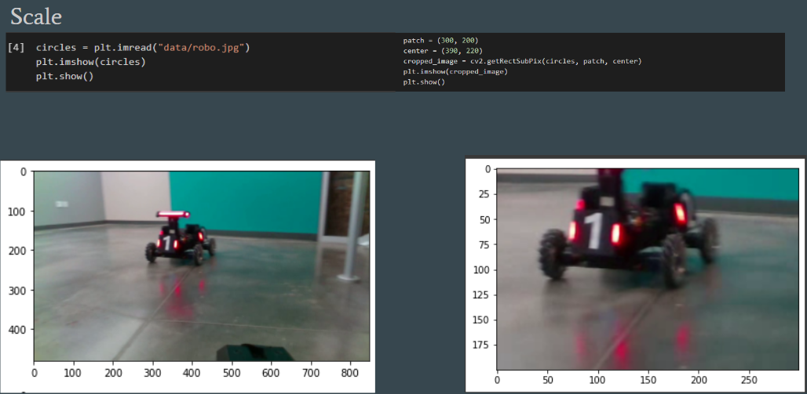
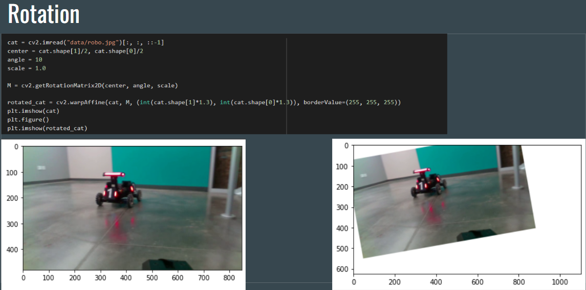
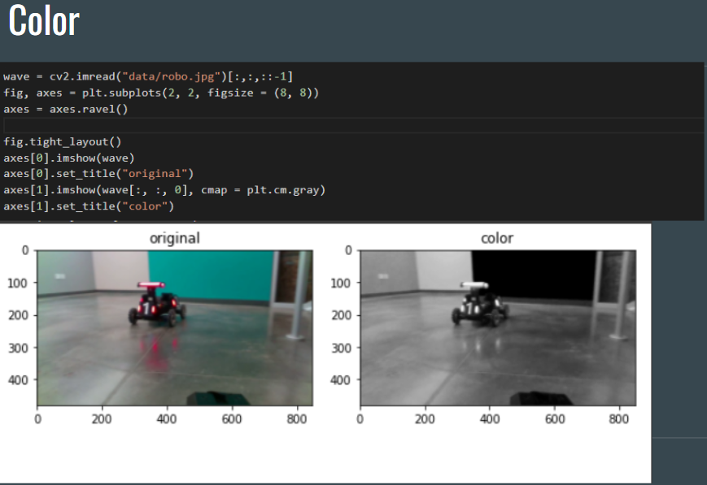
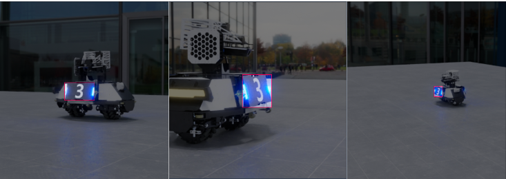

Our goal for this project is to augmented Robomaster's datasets in order to get a larger datasets for traning, and also generate synthetic datasets for different angle of the robots by changing camera angles in Maya application. This is a year long project
Our team expand the existing datasets in order to improve the accuracy and train the datasets in different methods in order to achieve it. The method we used including scaling, rotation, position, and brightness.
Below are some examples of data augmentation for scaling, rotation, and color that I did



In order to improve dataset size and variation, we implemented a synthetic data generation pipeline using Autodesk Maya and allowed us generate any amount photorealistic synthetic images with high randomization and expandability. Synthetic data generation offers a solution by allowing the extraction of large amounts of images and metadata directly from a virtual environment, while maintaining precise ground truth annotations.
